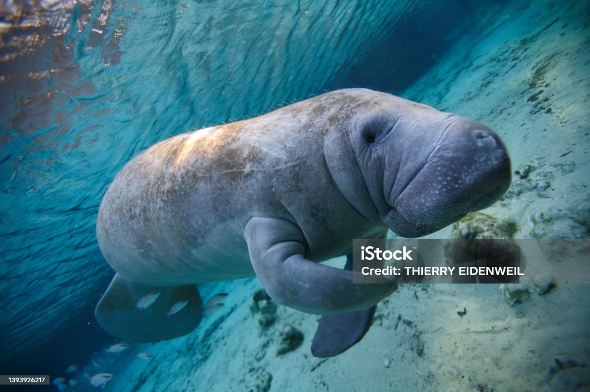
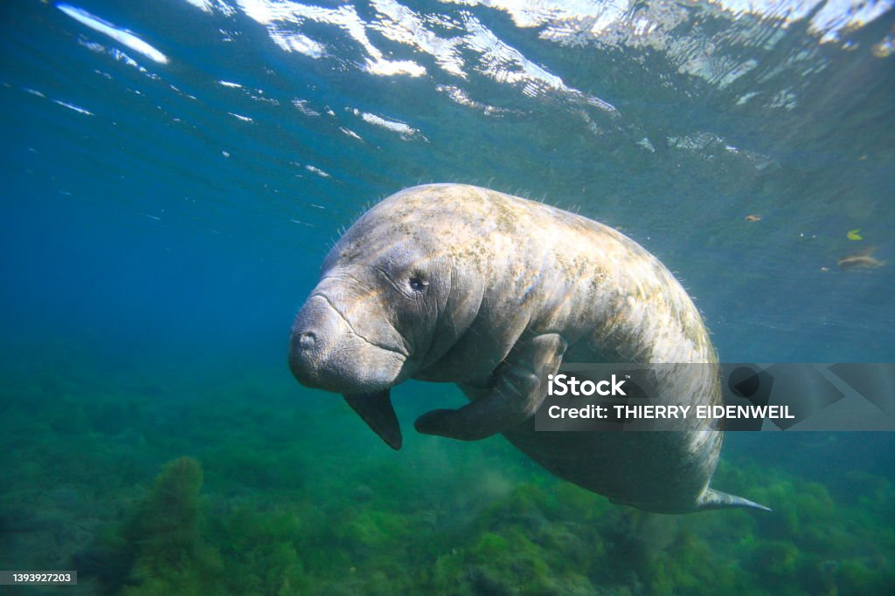
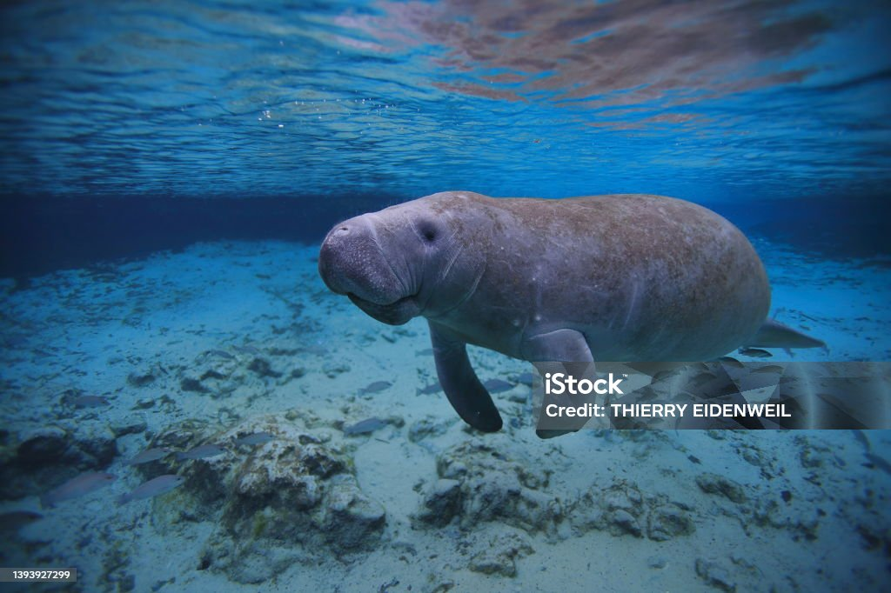
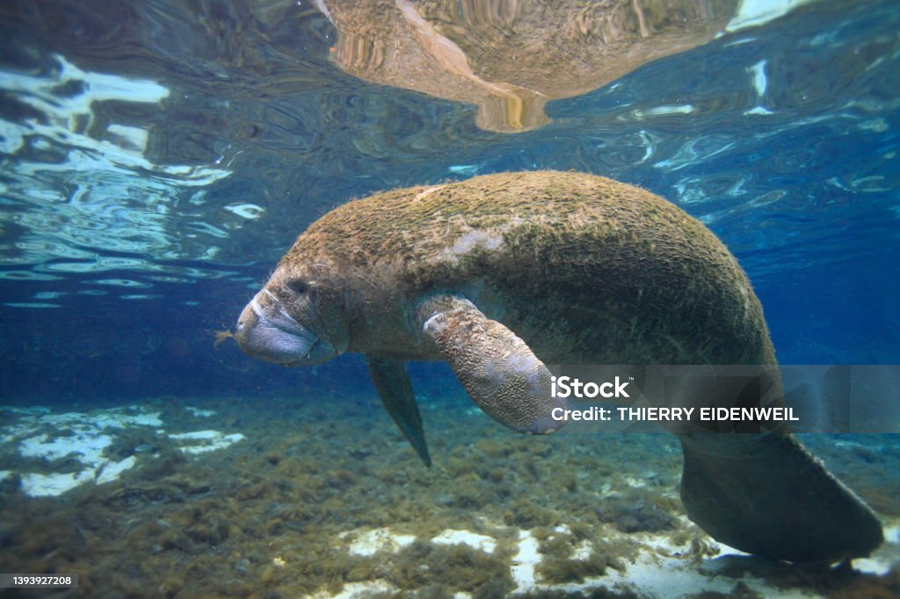
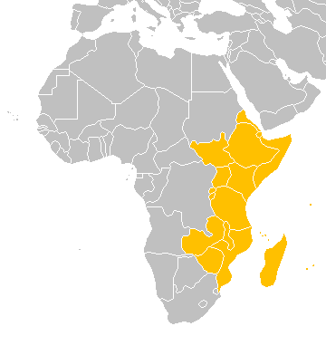

Lợn biển Châu Phi (African Manatee) là một trong những loài sinh vật biển hiền lành nhất thế giới, thường được gọi là "bò biển". Chúng dành phần lớn thời gian trong ngày để ăn các loài thực vật thủy sinh ở vùng nước nông, ven bờ và các cửa sông khu vực Tây Phi.
Thật không may, cuộc sống yên bình của chúng đang bị đe dọa nghiêm trọng. Môi trường sống bị phá hủy do xây dựng đập thủy điện, ô nhiễm nguồn nước, và đặc biệt là vấn nạn săn bắt trộm để lấy thịt và da đã khiến số lượng loài này suy giảm đáng báo động. Ngoài ra, chúng cũng thường xuyên bị mắc kẹt vào các lưới đánh cá thương mại.
Bằng cách hỗ trợ các dự án bảo tồn, chúng ta có thể mở rộng các khu bảo tồn biển sinh thái, dọn sạch môi trường sống dưới nước và giáo dục cộng đồng địa phương về tầm quan trọng của loài động vật đáng yêu này.
Quyên Góp Ngay ➔